VektorFIL user guide
Design lumped L-C filters and diplexers by typing a specification and watching the schematic and response update as you type, backed by real network synthesis rather than tables. This guide explains every control and gives just enough theory to understand what the program does and why.
What VektorFIL is
VektorFIL is an educational RF design tool. Its filter designer follows the long tradition of interactive L-C filter programs: choose a response (lowpass, highpass, bandpass, bandstop), an approximation (Butterworth, Chebyshev, Bessel, elliptic) and a circuit, enter frequencies and impedances, and the finished schematic with element values appears immediately, together with its simulated response.
Underneath sits a synthesis engine. Instead of looking element values up in printed tables, it computes the filter's transfer function for exactly your specification and then extracts the circuit from it, element by element, at 50 or more significant digits. The method is the one described by G. Szentirmai for his S/FILSYN program, whose manuals are now in the public domain, and in the classic filter-synthesis literature (see References). Consequences you will notice:
- any ripple, any cutoff attenuation and any order up to 25 work, not just tabulated ones;
- elliptic filters of even order are available with equal terminations;
- band edges come out exactly where you ask, including for narrow-band coupled-resonator filters, whose classic formulas are only approximate;
- several circuits that tables never covered: the minimum-inductor ("zig-zag") elliptic bandpass, quasi-symmetric bandpass filters, singly terminated filters and diplexers.
Every design is verified by simulating the finished circuit against the transfer function it was built from.
Installing and running
Windows: the installer
Download VektorFIL-<version>-setup.exe from the Releases section of the
GitHub page and run it. No administrator rights are
needed (it installs for the current user unless you choose otherwise), and Python is not required. The installer
adds VektorFIL and this user guide to the Start menu. A portable zip of the same program is offered as well: unzip
it anywhere and run VektorFIL.exe.
Windows may show a SmartScreen warning for a new, unsigned program; choose More info → Run anyway.
From source (any platform)
VektorFIL is written in Python and needs Python 3.10 or newer.
python -m venv .venv .venv/Scripts/python -m pip install -r requirements.txt # Windows # .venv/bin/python -m pip install -r requirements.txt # Linux / macOS .venv/Scripts/python -m vektorfil
On Windows you can also double-click VektorFIL Filter.bat in the project folder. The diplexer tool
opens from Tools → Diplexer…, or on its own with
python -m vektorfil.gui.diplexer_window.
The program depends on numpy, scipy, mpmath (high-precision arithmetic),
PySide6 (the Qt user interface) and pyqtgraph (plots). The regression tests run with
python -m pytest tests; python -m vektorfil --selftest runs a quick check without a window.
The Help menu
Help opens this guide (F1), the GitHub page, the folder with the error log, the licence texts and the About box with the version number.
vektorfil.log in your application-data folder
(%LOCALAPPDATA%\VektorFIL on Windows; Help → Show log folder opens it). The program keeps
running.A first filter in one minute
- Start the program. A 5th-order Chebyshev lowpass at 100 MHz is already designed.
- Under ① Response click Lowpass; under ② Approximation choose Chebyshev; under ③ Circuit choose Series element first.
- Under ④ Specification type
70for the cutoff frequency, set the order to7and the passband ripple to0.25. - The plots and the schematic update while you type. The summary at the bottom of the left panel shows the output resistance and the 3 dB frequency.
- Hover over the response to read S21 and S11; open Element values for a copyable list, or use File → Export for an S2P file or a SPICE netlist.
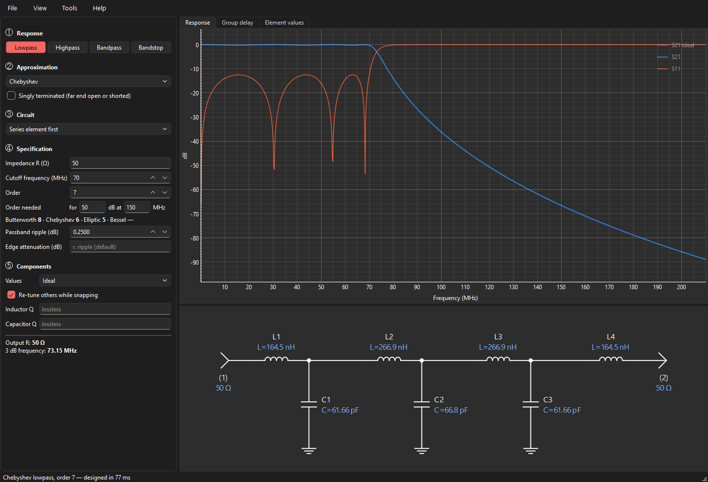
The main window
Left: the specification, step by step
- ① Response
- Lowpass, highpass, bandpass or bandstop.
- ② Approximation
- Butterworth, Chebyshev, Bessel or elliptic, optionally singly terminated. For even-order elliptic filters also type C (equal terminations) or type B (unequal).
- ③ Circuit
- How the filter is built: the list offers the circuits that exist for the chosen response and approximation.
- ④ Specification
- Impedance, frequencies, order (with a live estimate of the order you need), ripple, edge attenuation, the elliptic stopband, and the resonator settings of coupled filters. Details in The specification.
- ⑤ Components
- Standard component values and the component Q used in the simulation.
Below the five steps a summary describes the result: output resistance, band edges, stopband, resonator range, and any warnings.
Right: the result
- Response
- S21 (transmission) and S11 (reflection) in dB. Hover for a readout. When standard values are used, the ideal response is shown dashed for comparison. View → Plot range sets the frequency range (automatic by default) and the number of points.
- Group delay
- Group delay in ns.
- Element values
- A text list using the same designators as the schematic, including resonance frequencies of resonators.
- Schematic
- Below the plots. Every element carries a designator (L1, L2 … C1, C2 …, TL1 … for transmission lines) and its value. Series elements are labelled above, shunt elements to the right. Ports are marked (1) and (2) with their terminations. Long filters scroll sideways instead of shrinking.
The status bar shows how long the design took and any problems. Designs are computed in the background, one at a time; the window never freezes.
Typing values
- Units. A bare number is in the unit shown in the field label (MHz, Ω, nH, pF …).
- Engineering suffixes work everywhere:
70M,1.5G,2.2k,27n,4.7p, or plain1e8. - Arrows. Frequencies and bandwidth step 1 % per click, resonator values 2 %, ripple 0.01 dB and Amin 1 dB. Ctrl+click or PgUp/PgDn takes ten steps. Arrows stop at the ends of a value's usable range.
- Live update. Every change triggers a new design about a tenth of a second later. Most designs take 20–100 ms; high-order elliptic and Bessel designs can take a few seconds (the status bar says "Computing…").
- Empty means automatic. Fields such as "Edge attenuation" or "Resonator L" show their default in grey; leave them empty to use it.
Responses and approximations
| Approximation | Passband | Stopband | Use it when |
|---|---|---|---|
| Butterworth | maximally flat, 3 dB at the cutoff | monotonic, 6·N dB/octave | a smooth, simple response is enough; the best match and delay at low frequencies |
| Chebyshev | equal ripple | monotonic, steeper than Butterworth | you can accept passband ripple (and the matching return-loss ripple) for better selectivity |
| Bessel | maximally flat delay | slow roll-off | pulse and time-domain fidelity matter more than selectivity (orders up to 15) |
| Elliptic (Cauer-Chebyshev) | equal ripple | equal minima, transmission zeros | you need the steepest transition for a given number of inductors |
| Butterworth / Chebyshev / Elliptic, singly terminated | as above | as above | one end must face an open or a short, e.g. the channels of a diplexer |
Choosing between all-pole and elliptic
An all-pole filter (Butterworth, Chebyshev, Bessel) has all its transmission zeros at DC or infinity: attenuation keeps rising away from the passband. An elliptic filter places some zeros at finite frequencies, so the attenuation dips back up to a guaranteed minimum (Amin) between notches. For the same number of inductors the elliptic filter is much more selective; for the same number of components the all-pole filter often wins, and it reaches deeper ultimate attenuation. Elliptic filters are also more sensitive to component tolerance.
Even-order elliptic: type B and type C
A classical elliptic function of even order has no zero at infinity and cannot be built as an L-C ladder. VektorFIL moves two zeros to infinity (type B, slightly unequal terminations) and then, by a frequency transformation that puts a reflection zero at DC, makes the terminations equal (type C, the default). Both are computed as exact equal-minima designs against your stopband edge.
How high an order?
Next to the order, Order needed takes an attenuation and the frequency where you need it, and shows at once the lowest order of each approximation that gets there, for the current response, cutoff and ripple. In the example above, 50 dB at 150 MHz for a 70 MHz, 0.25 dB lowpass needs order 8 (Butterworth), 6 (Chebyshev) or 5 (elliptic); a Bessel filter cannot reach it ("—").
The specification
- Impedance R
- The termination impedance (both ends, unless the circuit makes them unequal, which the summary reports as "Output R").
- Cutoff / Center frequency
- Lowpass and highpass: the cutoff. Bandpass and bandstop: the centre frequency. For most bandpass circuits this is the geometric centre √(flo·fhi); the quasi-symmetric circuit uses the arithmetic centre.
- Bandwidth
- Bandpass and bandstop: the width between the two cutoff points.
- Order
- The number of reactive branches of the lowpass prototype (N). A bandpass of order N has N resonators.
- Passband ripple
- Chebyshev and elliptic only. 0.1 dB ripple corresponds to about 16.4 dB return loss; 0.01 dB to 26.4 dB.
- Edge attenuation
- The attenuation at the cutoff (or band edges), i.e. where the cutoff is defined. Default: 3.01 dB for Butterworth and Bessel, the ripple for Chebyshev. You may define the cutoff at any other attenuation (for a Chebyshev, any value of at least the ripple); the filter is scaled so that the cutoff frequency has exactly that loss.
- Stopband set by
- Elliptic only. Minimum attenuation (Amin): the stopband edge follows. Stopband frequency (Fs): Amin follows. The summary reports both, and the transmission zeros.
- Resonator L / C / line Z0
- Coupled-resonator bandpass circuits only; see Coupled-resonator bandpass.
- Exact band edges
- Coupled circuits only; see below.
Under ⑤ Components, Values chooses ideal values or 5 % (E24), 2 % (E48), 1 % (E96) standard values (see Standard component values), and Inductor Q and Capacitor Q add losses (see Component Q).
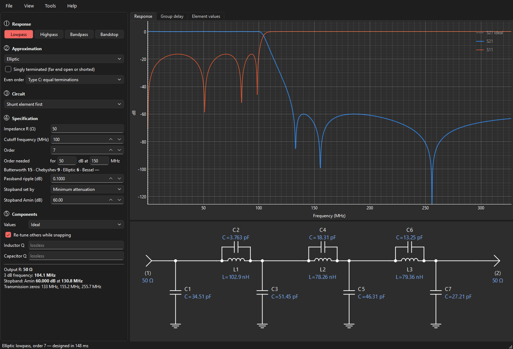
Lowpass and highpass
Two circuits are offered, named after the element at the input:
- Shunt element first: a lowpass starts with a capacitor to ground. For odd orders it uses one inductor fewer than the alternative, usually the first choice since inductors are larger, costlier and lossier.
- Series element first: a lowpass starts with a series inductor. Use it when a series element at the input suits the circuit around the filter (e.g. a diplexer).
For elliptic lowpass filters, shunt element first puts the resonators as parallel L-C tanks in the series arms; series element first puts them as series L-C traps to ground. A highpass is the lowpass with every L and C exchanged (L′ = 1/(ωc2C), C′ = 1/(ωc2L)), so for a highpass it is series element first that saves inductors. The Element values tab shows the count either way.
Bandpass circuits
| Circuit | Structure | Good for |
|---|---|---|
| Shunt / series element first | full transform: every series L becomes a series L-C, every shunt C a shunt L‖C (elliptic: each trap becomes a pair of traps) | wide bandwidths (> 30 %); exact for any width |
| Shunt resonators, capacitive coupling | shunt parallel resonators with equal L, coupled by series capacitors | narrow bandwidths (< 20–30 %); equal inductors or capacitors; practical values |
| Shunt resonators, inductive coupling | shunt parallel resonators with equal C, coupled by series inductors | |
| Series resonators, shunt-C coupling | series resonators with equal L, coupled by shunt capacitors | |
| Tubular | series inductors joined by capacitor pi-networks, a capacitor to ground at each end and every junction | the classic coaxial "tubular" construction |
| Tumbular | the tubular with every L and C swapped: series capacitors joined by inductor pi-networks, an inductor to ground at each end and every junction | same passband as the tubular, steeper lower skirt (a more highpass-like response) |
| Coaxial resonators, capacitive coupling | as the capacitive-coupled filter, with shorted transmission-line resonators plus loading capacitors | ceramic coaxial resonator filters |
| Quasi-symmetric (Carassa) | series resonators and shunt inverter capacitors | 10–50 % bandwidth with symmetric skirts |
| Zig-zag, fewest inductors (Saal–Ulbrich) | elliptic, minimum number of inductors | selective elliptic bandpass with fewest inductors (even orders) |
Why not always the full transform? At narrow bandwidths its element values spread enormously: series inductors become huge, shunt inductors tiny, and their parasitics dominate. Coupled-resonator filters keep all resonators alike and absorb the impedance transformation into the coupling elements.
Coupled-resonator bandpass
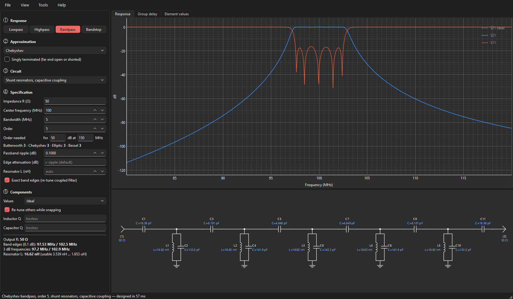
The resonator value and its usable range
All resonators share one value: the inductor (capacitive coupling, shunt-C coupling, tubular), the capacitor (inductive coupling, tumbular) or the line impedance (coaxial resonators). It is a free choice within a usable range, which the summary shows:
- at one end of the range an end coupling element shrinks to nothing (an end coupling capacitor of a capacitive-coupled filter becomes infinite and can simply be left out: a popular trick to save two parts);
- at the other end a resonator element would turn negative.
Leave the field empty for an automatic value, type one, or step through the range with the arrows. Values outside the range are pulled to the nearest end (with a note in the summary).
Exact band edges
Coupled-resonator formulas are narrow-band approximations: built straight from them, the band comes out slightly narrow and off-centre (a few tenths of a percent at 5 % bandwidth, more at wider bandwidths). With Exact band edges checked (the default) VektorFIL simulates the filter, measures the edges and re-tunes until they sit exactly on the specification. Unchecked, you get the plain formulas: then the edges move when you change the resonator value, and the summary shows the actual edges in red.
With exact edges, the resonator value changes only the balance of the two skirts. At narrow bandwidths that effect is small (the asymmetry comes mostly from the circuit itself); at wider bandwidths it grows.
Tubular
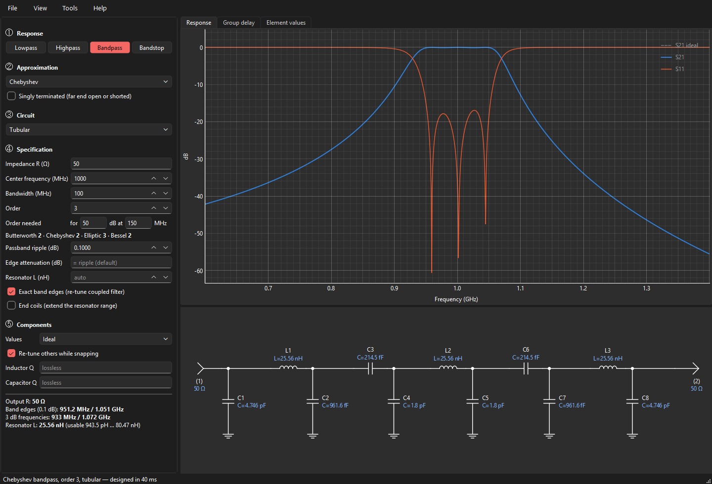
The tubular filter is derived exactly from the series-resonator, shunt-C coupled filter: each series resonator's capacitor is split around its inductor (the end resonators keep their whole capacitor on the inner side) and each resulting capacitor tee is converted to the equivalent pi. Its response is identical to that of the shunt-C coupled filter.
Tumbular
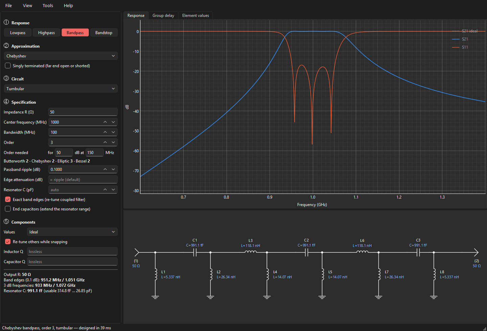
The tumbular is the author's own circuit, which he used for years and designed by hand: a tubular filter in which every inductor is a capacitor and every capacitor an inductor. VektorFIL designs the exact tubular for the same specification and then swaps each part about the centre frequency f0:
C′ = 1 / (ω0² L) L′ = 1 / (ω0² C)
This maps every frequency f to f0²/f. The band edges (geometric about f0) map onto each other, so the passband, ripple and edges stay exactly the same, while the two skirts trade places: the tubular's steep upper skirt becomes a steep lower skirt, giving the tumbular its more highpass-like response. The shared resonator value is now the series capacitor.
End coils: a wider resonator range
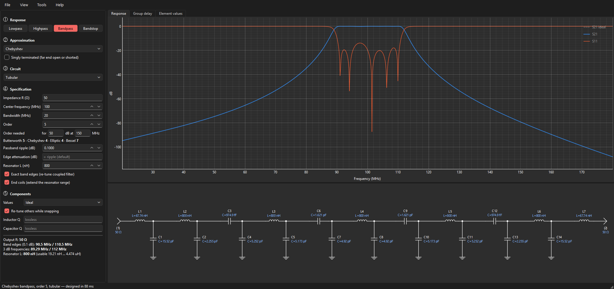
Raising the tubular's resonator inductor balances the skirts (the lower skirt gets steeper, the upper one less steep), but the plain tubular stops at an upper limit. There the capacitor to ground at each end has shrunk to nothing. The end capacitor has to make the termination R look like the larger resistance a larger resonator needs, and a capacitor network can only step a resistance down. Past the limit it would need a negative capacitor.
With End coils checked, VektorFIL continues past the limit by putting a series inductor in front of each end capacitor. For a required resistance Re > R the two end elements are
XL = √(R (Re − R)) BC = XL / (R Re)
which present exactly Re with no reactance left over. At the limit (Re = R) the coil is zero, so the design carries on smoothly: below the limit the option changes nothing. The range offered goes up to ten times the plain limit. For the tumbular the same option adds a series capacitor at each port and extends the resonator capacitor downwards.
Far beyond the limit the narrow-band formulas are stretched and the passband ripple grows. The summary warns when the passband loss rises well above the specified value. The band edges stay exact.
Coaxial resonators
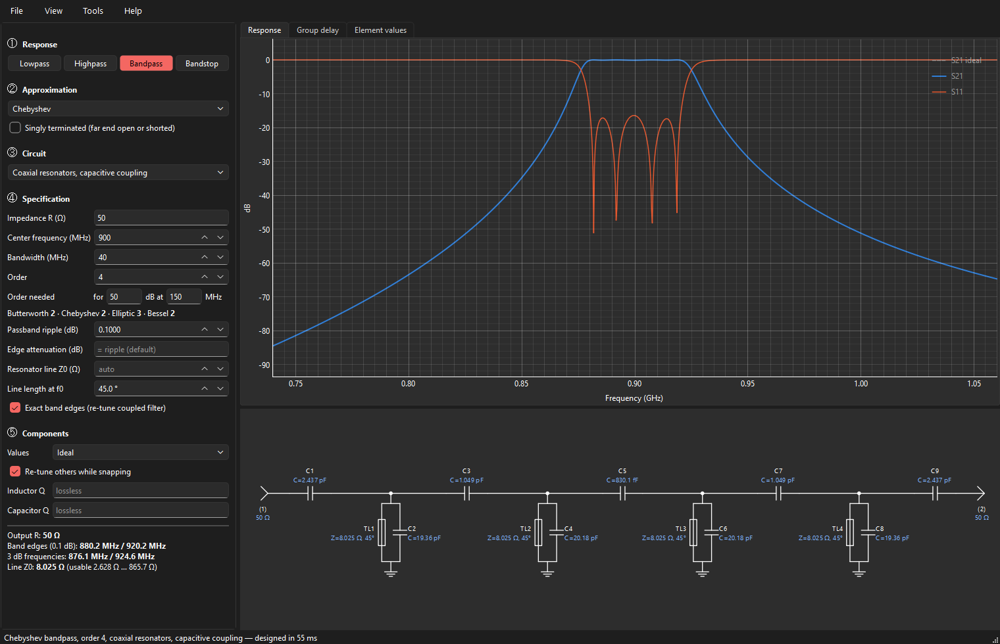
The Coaxial resonators, capacitive coupling circuit replaces each L-C resonator with a short-circuited TEM transmission line, typically a ceramic coaxial resonator, tuned to the centre frequency by a capacitor in parallel. All lines are identical; only the loading capacitors differ. You choose:
- Resonator line Z0: the line impedance, with arrows and a usable range like the resonator inductor;
- Line length at f0: the electrical length in degrees at the centre frequency (5–85°). Shorter lines need more loading capacitance and push the line's next resonance (a spurious passband) further up; at 75° a 900 MHz filter shows a spurious response near 2.7 GHz.
Near f0 a loaded shorted line behaves like a parallel resonator with susceptance slope
so the capacitive-coupling design method applies unchanged. The simulation uses the exact line model, so spurious responses are shown faithfully.
Quasi-symmetric bandpass
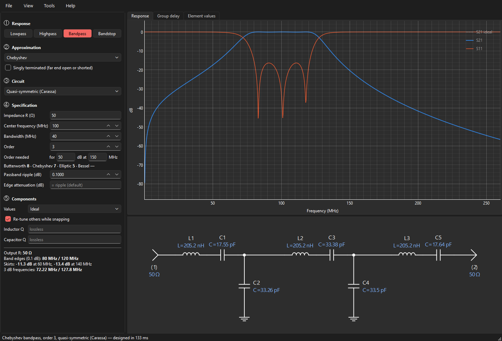
A conventional lowpass-to-bandpass transform keeps geometric symmetry: plotted on a linear frequency axis the upper skirt is much weaker than the lower one, increasingly so for wide bandwidths. F. Carassa showed that good arithmetic symmetry requires roughly three times as many transmission zeros at infinity as at DC.
The quasi-symmetric circuit gets closer to that ratio: starting from the conventional (series element first) bandpass S P S P …, the first and then every other shunt parallel resonator P is replaced with a series resonator between two shunt capacitors acting as impedance inverters. Each inverter capacitor adds a zero at infinity.
| N | Conventional | Symmetric |
|---|---|---|
| 2 | S P | S C S |
| 3 | S P S | S C S C S |
| 4 | S P S P | S C S C S P |
| 5 | S P S P S | S C S C S P S |
No exact equal-ripple realization exists in this circuit, so VektorFIL designs it in two steps: an initial design from inverter theory, then a least-squares refinement of the capacitors toward an arithmetically symmetric version of the chosen response, with the band edges at f0 ± BW/2. The passband ripple ends up within a few hundredths of a dB of the target; the summary reports the skirts one bandwidth away from the centre. The method is meant for 10–50 % bandwidth.
Zig-zag elliptic bandpass
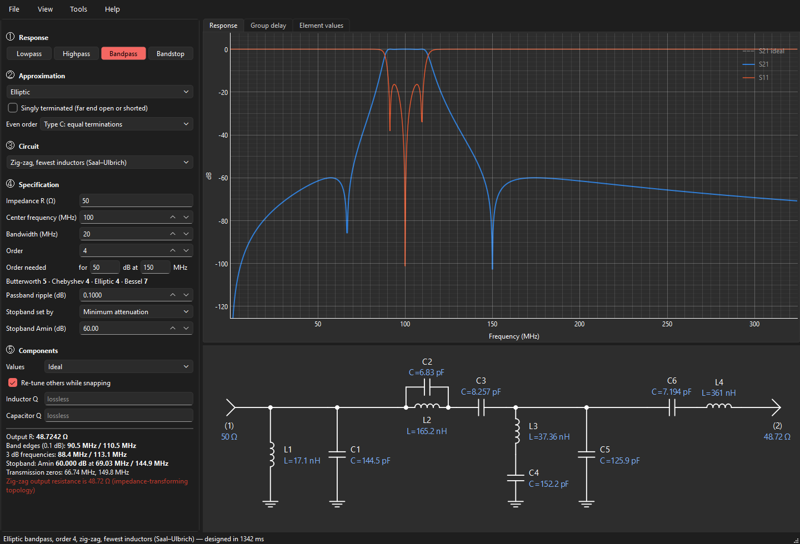
The minimum-inductor elliptic bandpass of Saal and Ulbrich achieves elliptic selectivity with fewer inductors than any other bandpass structure. It cannot be obtained by transforming a lowpass element by element; VektorFIL builds it by direct bandpass synthesis: the bandpass transfer function is formed in the bandpass frequency domain and a search over extraction sequences finds the realization with the fewest inductors. It exists for even orders. This circuit transforms impedance slightly (the summary shows the output resistance, e.g. 48.7 Ω for 50 Ω in).
Bandstop
Bandstop filters use the full transform: series inductors of the lowpass become parallel L-C tanks in the series arms, shunt capacitors become series L-C traps to ground. The centre and bandwidth are those of the passband edges (the cutoff points around the stopband). Elliptic bandstop filters are supported, with the stopband frequency (Fs) being the lower stopband edge.
Singly terminated filters
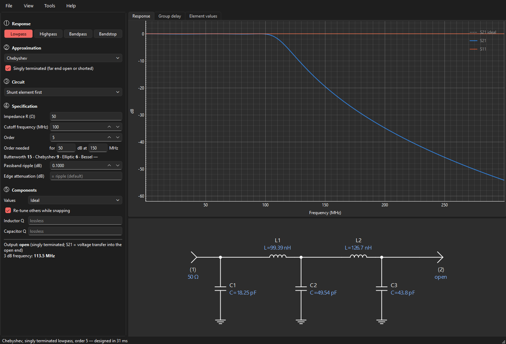
A singly terminated filter has its source resistance at one end only; the other end is open (output voltage) or shorted (output current). Which one follows from the circuit: an open end faces a shunt capacitor, a shorted end a series inductor. Choose Butterworth, Chebyshev or elliptic (with its notches) and tick Singly terminated; shunt or series element first then sets the far end.
Read the plots differently from a doubly terminated filter:
- S21 is the voltage transfer into the open end, V2/E (or the current into the short); it is 1 (0 dB) at DC for a lowpass.
- Even-order Chebyshev filters rise to +ripple dB inside the passband: genuine voltage gain into the open end.
- S11 is 0 dB everywhere: a lossless network with an open far end reflects all power. That is why these filters are used in pairs, as a diplexer whose combined input looks resistive.
The values agree with the classic tables; e.g. a 4th-order Butterworth gives 1.5307, 1.5772, 1.0824, 0.3827 from the open end.
The diplexer tool
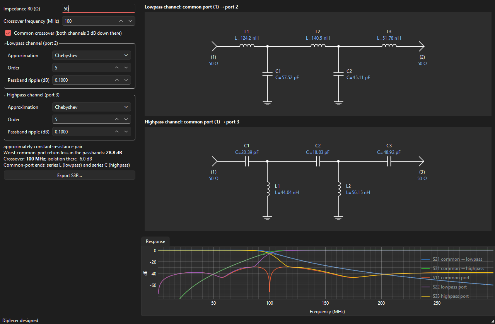
Using it
- Set the impedance R0 and the crossover frequency.
- For each channel choose the approximation (Butterworth, Chebyshev or Elliptic), the order, the ripple (Chebyshev and elliptic) and, for elliptic channels, the stopband attenuation Amin. The summary lists each elliptic channel's notch frequencies.
- Read the result: both channel schematics drawn from the common port (1) to the lowpass port (2) and the highpass port (3); S11 at the common port, S22 and S33 at the lowpass and highpass ports, S21 and S31 through the channels, S32 isolation between the outputs, and the worst return loss in the passbands.
- Export a 3-port Touchstone file with Export S3P… (port 1 common, 2 lowpass, 3 highpass).
Uncheck Common crossover to give each channel its own 3 dB frequency (for instance a guard band).
The approach in this tool is the one its author has used for production diplexers since 1993 (see About the author): two singly terminated channels, joined at a common port through a series inductor on the lowpass side and a series capacitor on the highpass side.
How it works
Each channel is a singly terminated filter, driven from the common port and loaded by R0 at its output. Its common-port end is always a series element: a series inductor for the lowpass and a series capacitor for the highpass. In the lowpass band the highpass's series capacitor is a high impedance, so it barely loads the junction, and vice versa: the L and the C "choose the direction" of the signal.
A lossless filter that is voltage driven at its input and terminated in R0 has an input conductance that follows its own response,
so in its passband G ≈ 1/R0 and in its stopband G ≈ 0. Paralleling the two channels gives a total conductance close to 1/R0 everywhere. If the two responses are complementary,
the conductances add up to exactly 1/R0 and the susceptances cancel: the common port is perfectly matched. Butterworth lowpass and highpass filters of equal order and common 3 dB crossover are complementary, so that choice gives an exact diplexer (the summary says so; S11 is zero to numerical precision).
Other pairs are approximately constant-resistance. The important rule is that each channel is 3 dB down at the crossover, so that both carry half the power there. The tool therefore specifies each channel by its 3 dB frequency. (Placing both ripple edges at the crossover instead would overload the common port with nearly twice the conductance and ruin the match.) With this rule a 5th-order 0.1 dB Chebyshev pair reaches about 29 dB return loss.
Elliptic channels give much sharper isolation next to the crossover for the same number of inductors: a pair of 7th-order channels with Amin = 60 dB rejects the other band by about 42 dB just 20 % beyond the crossover, with about 29 dB return loss at the common port. Each elliptic channel is synthesized directly as a singly terminated elliptic filter (its notches placed by zero shifting) and scaled so that its 3 dB point is the crossover. Even-order elliptic channels take a few seconds to compute.
Component Q
Under ⑤ Components, Inductor Q and Capacitor Q add losses to the simulation (constant Q over frequency: a series resistance ωL/Q for each inductor, a parallel conductance ωC/Q for each capacitor). The design itself stays lossless; the response shows the insertion loss and the rounding of the band edges that real parts will cause. Leave the fields empty for an ideal (lossless) simulation.
Rule of thumb: the midband loss grows with the order and falls with Q, and in a bandpass filter it also grows in proportion to f0/BW. Narrow bandpass filters therefore need high-Q resonators.
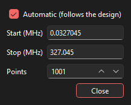
Standard component values
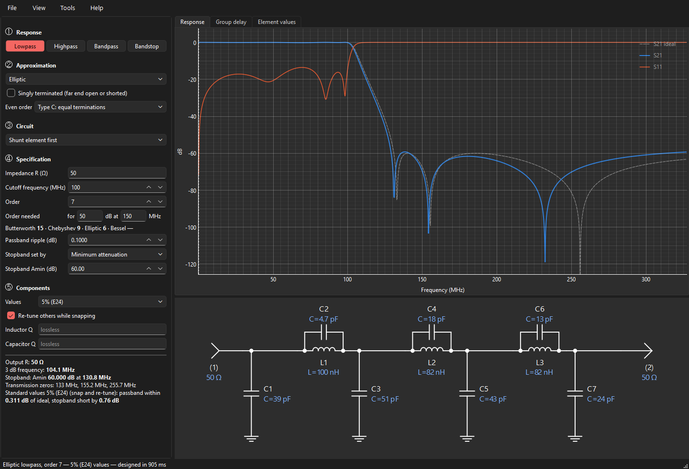
Choose 5 % (E24), 2 % (E48) or 1 % (E96) under ⑤ Components → Values. Rounding every element to the nearest standard value often spoils the response, especially the passband ripple. VektorFIL instead does what one would do by hand, automatically:
- snap the element that is already closest to a standard value, and keep it fixed;
- re-tune the remaining free elements so that the response stays as close as possible to the ideal;
- repeat until every element is standard;
- finally try each element one standard step up and down and keep any improvement.
If plain rounding happens to be better, it is used. The summary states the worst passband deviation from the ideal and, for elliptic filters, by how much the stopband falls short of Amin. Typical results at 5 %: a 7th-order Chebyshev lowpass within 0.07 dB of ideal (plain rounding: 0.5 dB).
Exporting: S2P, S3P, SPICE
- S2P
- File → Export S2P writes a 2-port Touchstone file in dB/angle format over the plot range (View → Plot range), referenced to an impedance it asks for (the filter's own by default). It contains S11, S21, S12 and S22 of the bare filter, including component Q losses. A start frequency of 0 is written as 1 Hz. With the automatic range on, Start and Stop show the range in use; typing your own turns the automatic range off.
- S3P
- The diplexer window exports a 3-port Touchstone file: port 1 common, port 2 lowpass, port 3 highpass.
- SPICE
- File → Export SPICE netlist writes a
.cirfile with an AC source, the source resistance, all elements named as in the schematic, and the load. Singly terminated outputs are represented by 1 TΩ (open) or 1 µΩ (short). - Element list
- File → Copy element values copies the element list to the clipboard.
Limits and messages
- Order
- Up to 25 (Bessel up to 15). High orders take a few seconds.
- "Not realizable at order N"
- The specification cannot be built as a ladder: element values would turn negative. Typical cause: a very high-order elliptic filter with a high Amin, whose zeros crowd against the passband edge. Lower the order or the Amin.
- "Unrealistic element values"
- Some element's reactance is more than 10,000 times larger or smaller than the termination impedance. The design is mathematically valid but probably impractical.
- "Resonator value limited to the usable range"
- A typed resonator value was outside its range and was pulled to the nearest end.
- "Coupled types are accurate below about 30 % bandwidth"
- Use a shunt- or series-element-first circuit (the full transform) or the quasi-symmetric circuit for wider bands.
- Zig-zag needs an even order
- The minimum-inductor elliptic bandpass exists for even orders only.
Theory: transfer functions
A lossless filter between a source resistance and a load is described by three real polynomials in the complex frequency s:
- the zeros of P are the transmission zeros (where nothing gets through: at DC, at infinity, or at the notch frequencies of an elliptic filter);
- the zeros of F are the reflection zeros (perfect match, inside the passband);
- E has all its zeros in the left half plane (it is a Hurwitz polynomial).
Because the filter is lossless, power is conserved, which gives the Feldtkeller equation
The ratio K = F/P is the characteristic function; the loss is A(ω) = 10 log10(1 + |K(jω)|2) dB. Designing a filter means first choosing K (the approximation), then finding a circuit with that transfer function (the synthesis).
Theory: approximation
All approximations are first designed as a normalised lowpass prototype: 1 Ω terminations, passband edge at 1 rad/s.
- Butterworth
- K = ε ωN: maximally flat at DC.
- Chebyshev
- K = ε TN(ω), with TN the Chebyshev polynomial and ε2 = 10ripple/10 − 1: the error is spread evenly over the passband.
- Bessel
- E(s) is the reverse Bessel polynomial: maximally flat group delay.
- Elliptic
- Equal ripple in the passband and equal minima in the stopband. The zero positions follow from Jacobi elliptic functions; even orders are handled as type B/C (see above).
A single recursion covers every equal-ripple passband with transmission zeros anywhere (R. J. Cameron's generalized Chebyshev function): with xn = (ω − 1/ωn)/(1 − ω/ωn) for each zero ωn,
All zeros at infinity give the ordinary Chebyshev filter; the elliptic zero positions give the elliptic filter; any other positions give any other equal-ripple filter.
For bandpass functions with an arbitrary split of zeros between DC and infinity (the symmetric case) VektorFIL works in the variable x = ω2 and finds the reflection-zero polynomial by the Remez exchange algorithm as a weighted best approximation; with equal numbers of zeros at DC and infinity it reproduces the ordinary bandpass exactly.
Theory: placing transmission zeros
An elliptic filter is optimal for a single stopband edge with one required attenuation. Real specifications are often stepped (e.g. 40 dB from 1.25 to 2 times the cutoff, 70 dB above). The S/FILSYN program solved this with a zero-placement optimiser, and VektorFIL's engine contains the same idea:
- the margin is the attenuation minus the requirement, evaluated at every local minimum between zeros and at every corner of the requirement;
- the zeros are moved until the smallest margin is as large as possible; at the optimum the active margins are all equal (a minimax solution, found by an exchange iteration);
- if the requirement cannot be met, the order is increased.
For a single edge this reproduces the classical elliptic filter exactly; for stepped requirements it often saves one or two orders. (The engine supports this; a user interface for stepped masks is planned.)
Theory: ladder synthesis
From E and F the input impedance of the filter, with the far end terminated, is
The ladder is obtained by taking this impedance apart one transmission zero at a time (Darlington synthesis):
- Zero at infinity
- Remove the pole of Z or Y at infinity completely: a series inductor or a shunt capacitor.
- Zero at DC
- Remove the pole at DC completely: a series capacitor or a shunt inductor.
- Zero at a finite frequency ωk
- Zero shifting: remove only part of a pole at infinity (or DC) so that the remainder vanishes at jωk; its inverse then has a pole at jωk, which is removed as a resonator (a parallel tank in a series arm, or a series trap to ground).
Whatever is left at the end must be a resistor: the load. Different orders of removal give different but equivalent circuits; VektorFIL tries them, discards any with negative elements, and keeps the preferred one (fewest inductors or capacitors, then the most even values). For singly terminated filters the input immittance is instead the ratio of the even and odd parts of E(s), expanded as a continued fraction.
Theory: from lowpass to bandpass
The classical transform substitutes
into the lowpass prototype. Element by element this turns inductors and capacitors into resonators (the full transform); an elliptic prototype's tanks split exactly into pairs of resonators. Applied to the polynomials instead, it gives the bandpass transfer function itself, from which direct bandpass synthesis extracts ladders the element-wise transform cannot reach, such as the zig-zag filter. The geometric transform makes the band symmetric on a logarithmic axis, which is why its skirts look lopsided on a linear one.
Theory: coupled resonators
A narrow-band bandpass can be described by its resonators and the couplings between them. From the lowpass prototype values g0 … gN+1 and the fractional bandwidth w = BW/f0:
The external Q values say how strongly the end resonators are loaded by the terminations; the coupling coefficients k how strongly neighbouring resonators interact. A coupling element (a series capacitor between two parallel resonators, a shunt capacitor between two series resonators) acts as an impedance or admittance inverter plus a negative element on each side; the negative elements are absorbed into the neighbouring resonators, which is why their tuning capacitors differ although the inductors are equal. The end couplings convert the termination to the required loading. These relations hold exactly only at the centre frequency, hence the edge correction.
Theory: numerical precision
Synthesis subtracts nearly equal polynomials at every step and loses digits each time. VektorFIL therefore computes the approximation and the synthesis at 50 significant digits, more for high orders (60 + 3·N); the original S/FILSYN program used 128-bit arithmetic for the same reason. Coefficients below half the working precision are treated as rounding residue. Each finished design is checked by simulating the circuit in ordinary double precision against the transfer function it came from.
Glossary
- Amin
- Minimum stopband attenuation of an elliptic filter.
- Edge attenuation
- Attenuation at the cutoff frequency (often written Aa), i.e. how the cutoff is defined.
- Designator
- Element name in the schematic and lists: L1, C3, TL2.
- E24 / E48 / E96
- Standard value series with 24, 48, 96 values per decade (5, 2, 1 % tolerance).
- g-values
- Element values of the normalised lowpass prototype (1 Ω, 1 rad/s), used internally.
- Inverter
- A network that turns an impedance into its reciprocal (scaled); realised here by a single capacitor with negative neighbours absorbed into the resonators.
- Return loss
- −20 log|S11|; higher is a better match.
- Singly terminated
- A filter with a resistive termination at one end only.
- Transmission zero
- A frequency where S21 = 0 (a notch, or DC/infinity).
- Zero shifting
- Partial removal of a pole so that the remaining immittance vanishes at a chosen frequency.
References
- G. L. Matthaei, L. Young, E. M. T. Jones, Microwave Filters, Impedance-Matching Networks, and Coupling Structures, Artech House, 1980.
- A. I. Zverev, Handbook of Filter Synthesis, Wiley, 1967.
- G. Szentirmai, S/FILSYN user manuals and application notes (public domain); in particular the ladder synthesis procedure, the zero-placement optimiser and application note 1, "Diplexer and multiplexer design".
- R. Saal, E. Ulbrich, "On the design of filters by synthesis", IRE Trans. Circuit Theory, CT-5, 1958.
- R. J. Cameron, "General coupling matrix synthesis methods for Chebyshev filtering functions", IEEE Trans. MTT, 1999.
- F. Carassa, "Band-pass filters having quasi-symmetrical attenuation and group-delay characteristics", Alta Frequenza, 1961.
- S. B. Cohn, "Direct-coupled-resonator filters", Proc. IRE, 1957.
- H. J. Blinchikoff, A. I. Zverev, Filtering in the Time and Frequency Domains, Wiley, 1976.
- A. B. Williams, F. J. Taylor, Electronic Filter Design Handbook, McGraw-Hill.
VektorFIL is written from these published sources; it contains no code or data from other programs. The S/FILSYN manuals' worked examples serve as reference results in the regression tests.
About the author
Pieter Ibelings designed his first diplexer filter in 1993 on a VAX minicomputer, with plain ASCII output. He designed both halves as singly terminated elliptic filters and then combined them into the diplexer, the same method this program's diplexer tool uses. Over the following 30 years his diplexer filters were used in cable TV amplifiers and fiber nodes. Every amplifier and fiber node carried between two and six of them, built as replaceable plug-in modules that set the frequency split, and the filters were built commercially in quantities of tens of millions.
The early designs used powdered-iron cores; as operating frequencies moved up, the inductors moved to phenolic and air cores.
With the help of Claude, an AI assistant by Anthropic, he created VektorFIL from scratch: a new program written from the published filter-synthesis theory listed under References, combining true network synthesis with a straightforward, interactive way of working. It contains no code or data from any other program.